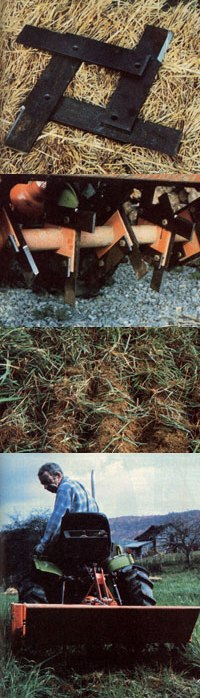

Each harrow blade is usually a square arrangement made up to four long steel bars bolted together at right angles. (Click here for
construction details.) A row of six blades can be rigged to fit almost any kind of cultivator or garden tiller. The sharpened leading edge on straight tines will chop deep, even furrows into worn-out sod... preparing a healthy seed base and rejuvenating the existing cover. A setup such as this - with square blades substituting for curved ones on a tractor-mounted rotovator - is compact and easy to maneuver into awkward spaces and corners.